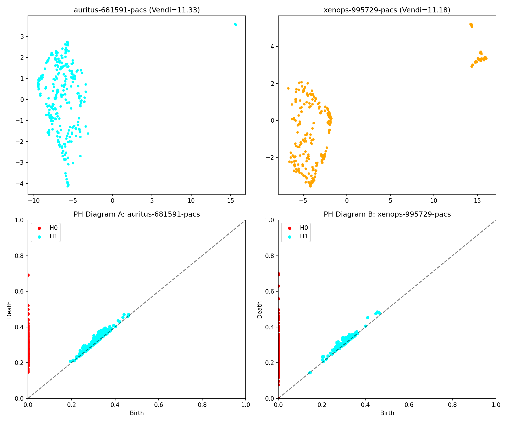
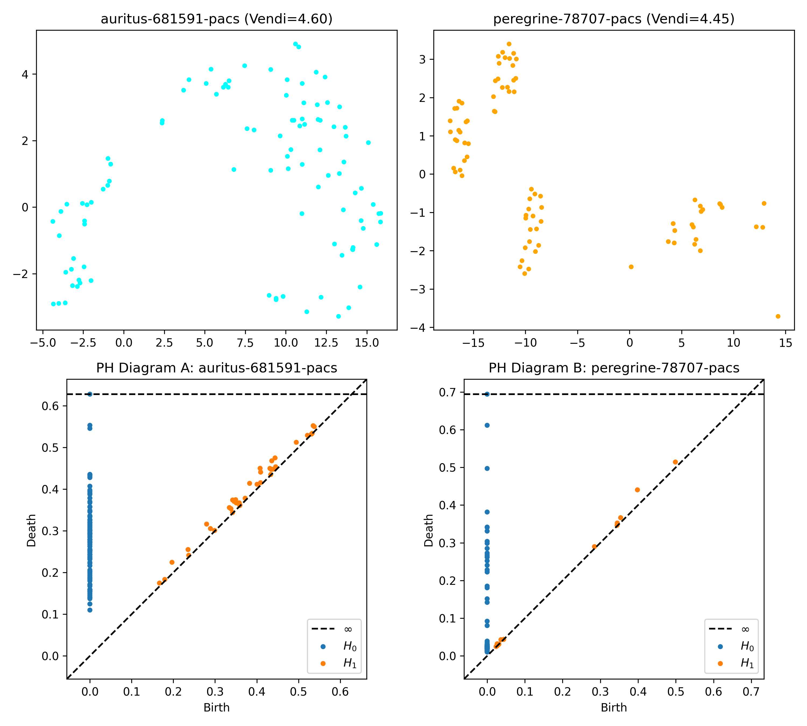

📏 Comparing Metrics: Statistical vs. Topological Diversity
In this analysis, we compare two fundamentally different ways to measure diversity in medical image embeddings:
- Vendi Score: captures entropy in the embedding space, reflecting how broadly distributed the vectors are.
- Persistent Homology (PH): captures the shape and structure of the distribution using tools from algebraic topology.
By contrasting these two approaches, we uncover when they agree—and when topology reveals deeper structure hidden from classical statistics.
✅ Case 1: Agreement — Statistically and Topologically Similar
Both Vendi and PH suggest these two institutions produce nearly identical data. Their embedding distributions are statistically close (low entropy difference), and their topological signatures—capturing clusters and voids—are nearly indistinguishable.
✅ Case 2: Agreement — Statistically and Topologically Different
In this example, both metrics confirm significant differences across datasets. The Vendi score captures broad entropy shifts, while PH diagrams reveal structural divergence— likely due to population differences, imaging protocols, or disease distributions.

🧠 Case 3: Disagreement — Vendi Similar, PH Very Different
This is the most revealing and clinically relevant case. The Vendi scores suggest the distributions are similar — same average entropy, same vector spread. But the PH diagrams tell a different story: topologically, the two datasets are quite distinct.
In practice, this could mean two datasets look statistically similar but vary in critical ways — such as abnormal morphology or imaging noise. Persistent homology helps expose these hidden differences.
